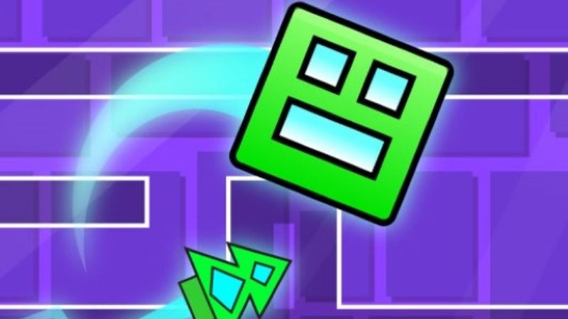

Parkour
Geometry Dash Maze Maps V2
Geometry Dash Maze Maps V2, labirent biçimindeki parkurlarda refleks ve zamanlama becerisini öne çıkaran bir beceri oyunudur. Engelleri doğru anda aşarak bölümü tamamlamaya ve önceki denemenizdeki hataları azaltmaya çalışırsınız.
🎮 Hemen Oyna